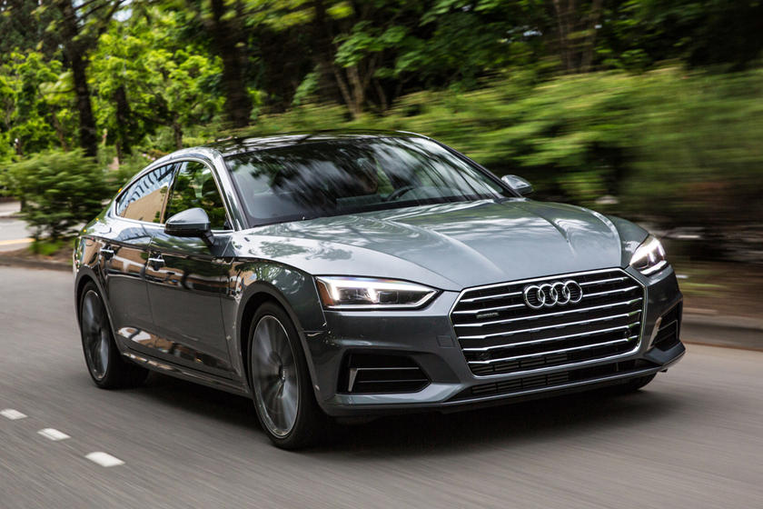
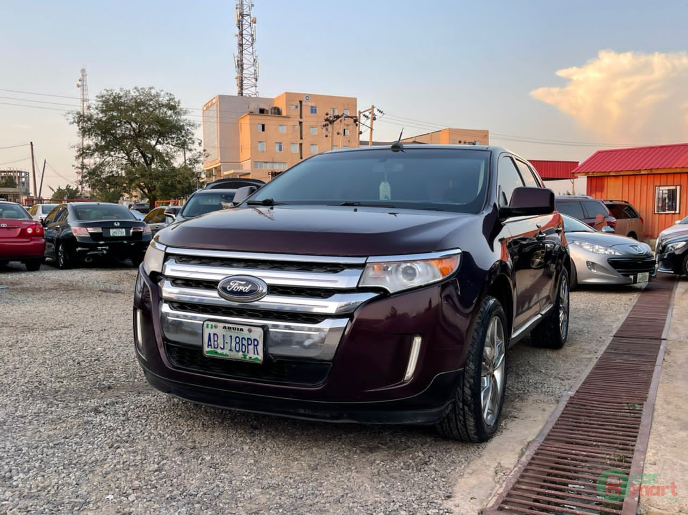

Top 5 Cars in the World
1. Aston Martin
- Top Speed: 402 kmh/250 mph
- 0-100 km/h: 2.6 seconds
- Torque: 900 NM
- Power: 1160 bhp

The name Aston Martin is derived partly from the name of its founder, Lionel Martin, and partly for a stretch of road in Hertfordshire, England, used for racing, called the Aston Hillclimb. World War I briefly halted production, and afterward Aston Martin produced cars specifically for the racetrack, focusing on speed more than luxury. However, building competition cars proved to be a strain on finances, and Aston Martin changed hands several times until World War II. In 1947, tractor manufacturer David Brown purchased the company, and models built under Brown's ownership also included his initials -- DB
2. Audi
- Top Speed: 401 kmh/250 mph
- 0-100 km/h: 3 seconds
- Torque: 1049 NM
- Power: 1036 bhp

German Engineer August Horch founded the company August Horch & Cie. Motorwagenwerke AG, in 1899. Due to misunderstandings among partners, Horch left the company and formed a new company, August Horch Automobilwerke GmbH in 1909. But what to call the new company? The old company retained the name Horch (meaning "listen" or "hearken" in German) so he chose the Latin translation instead - Audi. Within a few years, Horch had made the Audi name well known in Europe.
3. BMW
- Top Speed: 435.31 kmh/270.8 mph
- 0-100 km/h: 2.4 seconds
- Torque: 1566 NM
- Power: 1244 bhp

BMW started its operation in 1912 and was formed by the merger of three German companies. The acronym BMW stands for Bayerische Motoren Werke GmnH, which roughly translates to Bavarian Engine Works Company. The name harks back to the company's origin in the German state of Bavaria. It also indicates BMW's original product range of engines for various applications.
4. Ferrari
- Top Speed: 320 kmh/199 mph
- 0-100 km/h: 3.4 seconds
- Torque: 539 NM
- Power: 493 bhp

The luxury car brand Ferrari is named after its Italian founder, Enzo Ferrari, who was an official Alto race driver. In 1939, he quit racing to build his own company. Within one year, he built 1500 cm3 8-Cylinder 815 Spider, winning its first Grand Prix in 1947. In Italian, the word Ferrari is derived from the word "ferraro", meaning blacksmith.
5. Ford
- Top Speed: 348 kmh/216 mph
- 0-100 km/h: 3.3 seconds
- Torque: 746 NM
- Power: 700 bhp

Henry Ford founded the Ford Motors Company in 1903, in Detroit, Michigan. Ford has left his first company Cadillac, and started his own car company with a $28,000 investment. He perfected the mass production of cars by introducing moving assembly lines. This gave him the edge to cut the cost and offer an affordable car to the American middle class. His famous mass production car of 1908, Model T, sold more than millions over the next 20 years. Later on, Ford made several acquisitions, including Volvo, Troller, and FPV brands.